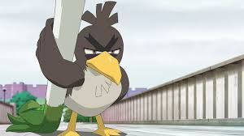
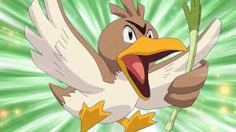

파오리에 대해서
파오리는 항상 파를 손에 들고 다니며 식물의 줄기를 칼처럼 휘둘러 상대를 베는 독특한 특징을 가진 포켓몬이다
파오리의 기술들
- 날카로운 눈 : 명중률이 하락하지 않으며 상대방의 회피율을 무시한다
- 정신력 : 풀죽지 않는다.
- 오기 : 능력치가 감소하면 공격력이 증가한다.
파오리의 종류
평범한 파오리와 다르게 가라르라는 지역에 사는 파오리는 조금 다르게 생겼다. 굵고 무거운 파를 다루면서 몸이 단련되었다.


파오리는 항상 파를 손에 들고 다니며 식물의 줄기를 칼처럼 휘둘러 상대를 베는 독특한 특징을 가진 포켓몬이다
평범한 파오리와 다르게 가라르라는 지역에 사는 파오리는 조금 다르게 생겼다. 굵고 무거운 파를 다루면서 몸이 단련되었다.
